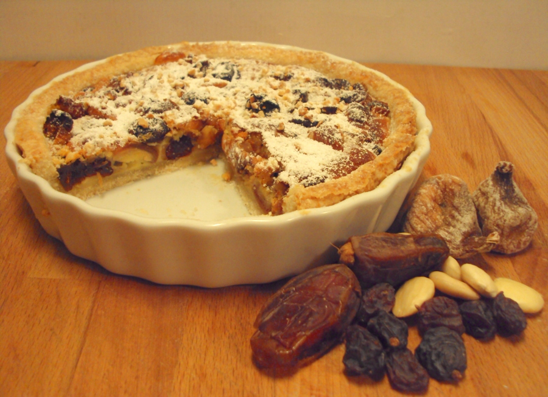

TARTA DE LOS 4 MENDIGOS
Ingredientes
- 1/2 receta de PÂTE SUCRÉE cruda
- 50 g de dátiles
- 50 g de higos secos
- 50 g de pasas de Alicante
- 30 g de almendras
- 1 huevo grande
- 1 cuch generosa de miel
- 100 ml de nata líquida --para batir, 35 % de MG
- 1 cuch de almendras en cubitos y azúcar molida para adornar
Los cuatro mendigos son cuatro de los principales frutos y frutas secas propios del Mediterráneo desde la antigüedad. Esta tarta se encuentra en Argelia. Las órdenes mendicantes cristianas recorrían el norte de África predicando sus creencias y, como debían llevar estos frutos en su zurrón, se asimilaron a las mismas; es decir, pasas, dátiles, higos y almendras podrían ser jerónimos, franciscanos, carmelitas y dominicos, o quizás los agustinos. En la Provenza también se sirven en la mesa los 4 mendigos –que a veces son más– en las comidas y cenas de la celebración navideña, no en tarta, pero sí en los rituales de mayor complejidad que yo conozco en el comer en esas fechas 

Encender el horno a 175º C.
Extender la masa a 1/2 cm de grosor siguiendo la instrucciones de la receta de la masa para cubrir un molde de porcelana –o metálico o de pirex– de 18 cm de diámetro engrasado con mantequilla. Pinchar el fondo por varios sitios con un tenedor e introducir en el frigorífico 1/2 hora para que repose y se endurezca.
Mientras, retirar los huesos a los dátiles y cortarlos en 4, los cabitos a las pasas de Alicante –son de moscatel– limpiar los higos y cortarlos en trozos. Batir el huevo con la miel y añadir la nata.
Rellenar el fondo de tarta con las frutas bien repartidas. Verter por encima el batido, que no debe cubrirlas del todo. Repartir los cubitos de almendra por encima.
Introducir en el horno ya caliente durante unos 25-30 minutos. Al sacarla, espolvorear por encima azúcar molida.
Servir templada o fría.
NOTA: Si se prefiere o si no hay otra opción –sobre todo al final del invierno, cuando las uvas pasas de moscatel ya están duras y secas– se pueden sustituir por pasas de Corinto.